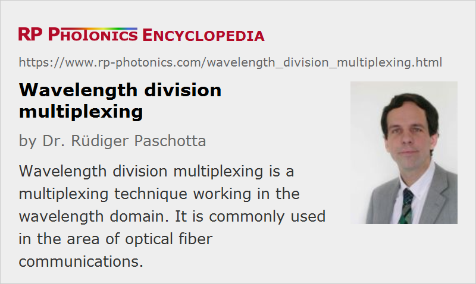

Wavelength Division Multiplexing
Acronym: WDM
Definition: a multiplexing technique working in the wavelength domain
More general term: optical multiplexing
Opposite term: time division multiplexing
German: Wellenlängen-Multiplexing
Categories: lightwave communications, methods
How to cite the article; suggest additional literature
Author: Dr. Rüdiger Paschotta
Wavelength division multiplexing is a kind of frequency division multiplexing – a technique where optical signals with different wavelengths are combined, transmitted together, and separated again. It is mostly used for optical fiber communications to transmit data in several (or even many) channels with slightly different wavelengths. In this way, the transmission capacities of fiber-optic links can be increased strongly, so that most efficient use is made not only of the fibers themselves but also of the active components such as fiber amplifiers. Apart from telecom, wavelength division multiplexing is also used for, e.g., interrogating multiple fiber-optic sensors within a single fiber.
WDM in Telecom Systems
Theoretically, the full data transmission capacity of a fiber could be exploited with a single data channel of very high data rate, corresponding to a very large channel bandwidth. However, given the enormous available bandwidth (tens of terahertz) of the low-loss transmission window of silica single-mode fibers, this would lead to a data rate which is far higher than what can be handled by optoelectronic senders and receivers. Also, various types of dispersion in the transmission fiber would have very detrimental effects on such wide-bandwidth channels, so that the transmission distance would be strongly restricted. Wavelength division multiplexing solves these problems by keeping the transmission rates of each channel at reasonably low levels (e.g. 10 Gbit/s or 100 Gbit/s) and achieving a high total data rate by combining several or many channels.
Two different versions of WDM, defined by standards of the International Telecommunication Union (ITU), are distinguished:
- Coarse wavelength division multiplexing (CWDM, ITU standard G.694.2 [7]) uses a relatively small number of channels, e.g. four or eight, and a large channel spacing of 20 nm. The nominal wavelengths range from 1310 nm to 1610 nm. The wavelength tolerance for the transmitters is fairly large, e.g. ±3 nm, so that unstabilized DFB lasers can be used. The single-channel bit rate is usually between 1 and 3.125 Gbit/s. The resulting total data rates are useful e.g. within metropolitan areas, as long as broadband technologies are not widespread in households (→ fiber to the home).
- Dense wavelength division multiplexing (DWDM, ITU standard G.694.1 [6]) is the extended method for very large data capacities, as required e.g. in the Internet backbone. It uses a large number of channels (e.g. 40, 80, or 160), and a correspondingly small channel spacing of 12.5, 25, 50 or 100 GHz. All optical channel frequencies refer to a reference frequency which has been fixed at 193.10 THz (1552.5 nm). The transmitters have to meet tight wavelength tolerances. Typically, they are temperature-stabilized DFB lasers. The single-channel bit rate can be between 1 and 100 Gbit/s, and in the future even higher.
Due to the wide amplification bandwidth of erbium-doped fiber amplifiers, all channels can often be amplified in a single device (except in cases where e.g. the full range of CWDM wavelengths is used). However, problems can arise from the variation of gain with wavelength or from interaction of the data channels (crosstalk, channel interference) e.g. via fiber nonlinearities. Enormous progress has been achieved with a combination of various techniques, such as the development of very broadband (double-band) fiber amplifiers, gain flattening filters, nonlinear data regeneration and the like. The system parameters such as channel bandwidth, channel spacing, transmitted power levels, fiber and amplifier types, modulation formats, dispersion compensation schemes, etc., need to be well balanced to achieve optimum overall performance.
Even for existing fiber links with only one or a few channels per fiber, it can make sense to replace senders and receivers for operation with more channels, as this can be cheaper than replacing the whole system with a system with a higher transmission capacity. In fact, this approach often eliminates the need to install additional fibers, even though the demand on transmission capacities is increasing enormously.
Apart from increasing the transmission capacity, wavelength division multiplexing also adds flexibility to complex communication systems. In particular, different data channels can be injected at different locations in a system, and other channels can be extracted. For such operations, add–drop multiplexers can be used, which allow one to add or drop data channels based on their wavelengths. Reconfigurable add–drop multiplexers make it possible to reconfigure the system flexibly so as to provide data connections between a large number of different stations.
The optimization of the key parameters such as number of optical channels, their frequency spacing, their optical bandwidth and the used modulation format is a complex task, involving various kinds of trade-offs.
In many cases, time division multiplexing (TDM) can be an alternative to wavelength division multiplexing. Here, different channels are distinguished by arrival time rather than by wavelength.
Suppliers
The RP Photonics Buyer's Guide contains 57 suppliers for wavelength division multiplexing devices. Among them:
Questions and Comments from Users
Here you can submit questions and comments. As far as they get accepted by the author, they will appear above this paragraph together with the author’s answer. The author will decide on acceptance based on certain criteria. Essentially, the issue must be of sufficiently broad interest.
Please do not enter personal data here; we would otherwise delete it soon. (See also our privacy declaration.) If you wish to receive personal feedback or consultancy from the author, please contact him e.g. via e-mail.
By submitting the information, you give your consent to the potential publication of your inputs on our website according to our rules. (If you later retract your consent, we will delete those inputs.) As your inputs are first reviewed by the author, they may be published with some delay.
Bibliography
| [1] | H. Ishio et al., “Review and status of wavelength-division-multiplexing technology and its application”, IEEE J. Lightwave Technol. 2 (4), 448 (1984), doi:10.1109/JLT.1984.1073653 |
| [2] | A. E. Willner and S.-M. Hwang, “Transmission of many WDM channels through a cascade of EDFA's in long-distance links and ring networks”, IEEE J. Lightwave Technol. 13 (5), 802 (1995), doi:10.1109/50.387797 |
| [3] | N. S. Bergano and C. R. Davidson, “Wavelength division multiplexing in long-haul transmission systems”, IEEE J. Lightwave Technol. 14 (6), 1299 (1996), doi:10.1109/50.511662 |
| [4] | G. E. Keiser, “A review of WDM technology and applications”, Opt. Fiber Technol. 5 (1), 3 (1999), doi:10.1006/ofte.1998.0275 |
| [5] | L. F. Mollenauer et al., “Demonstration of massive wavelength-division multiplexing over transoceanic distances by use of dispersion-managed solitons”, Opt. Lett. 25 (10), 704 (2000), doi:10.1364/OL.25.000704 |
| [6] | ITU Standard G.694.1 (06/02), “Spectral grids for WDM applications: DWDM frequency grid”, International Telecommunication Union (2002) |
| [7] | ITU Standard G.694.2 (12/03), “Spectral grids for WDM applications: CWDM wavelength grid”, International Telecommunication Union (2003) |
See also: fibers, optical fiber communications, time division multiplexing
and other articles in the categories lightwave communications, methods
|  |
If you like this page, please share the link with your friends and colleagues, e.g. via social media:
These sharing buttons are implemented in a privacy-friendly way!